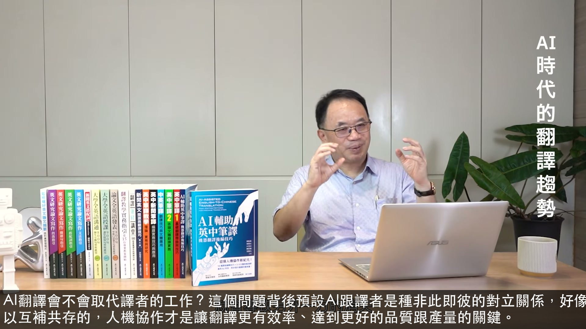
AI翻譯會不會取代譯者的工作？這個問題背後預設AI跟譯者是種非此即彼的對立關係，好像其中一方的存在就會導致另外一方的消失。但其實AI跟譯者是完全可以互補共存的，人機協作才是讓翻譯更有效率、達到更好的品質跟產量的關鍵。
00:00:19.320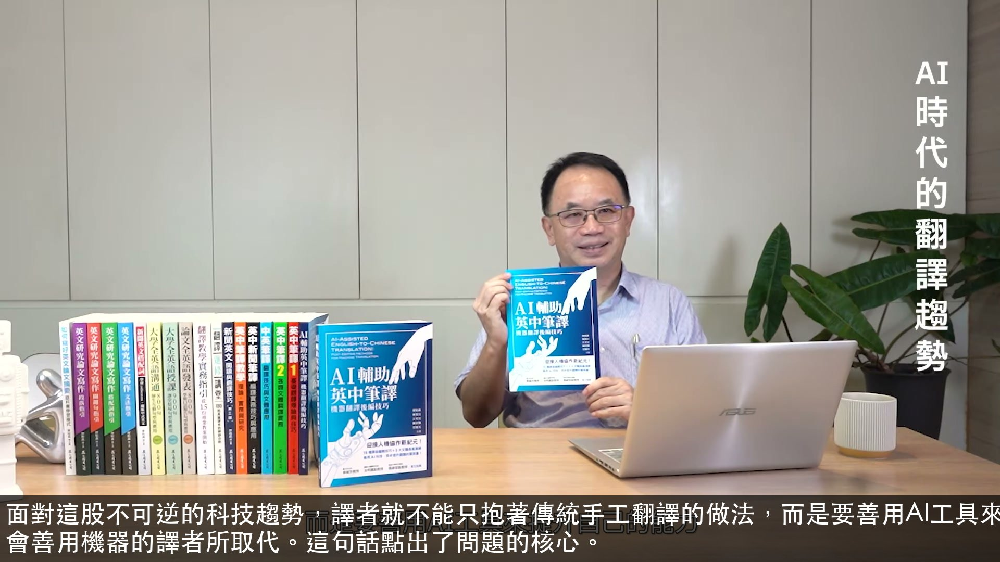
面對這股不可逆的科技趨勢，譯者就不能只抱著傳統手工翻譯的做法，而是要善用AI工具來提升自己的能力。就像翻譯業界常說的：譯者不會被機器取代，但會被更會善用機器的譯者所取代。這句話點出了問題的核心。
00:00:43.040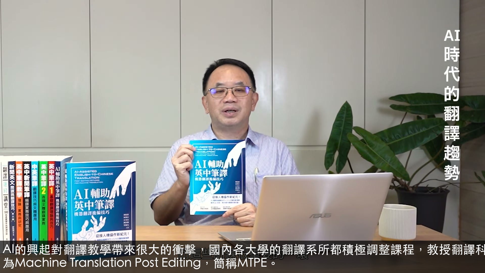
AI的興起對翻譯教學帶來很大的衝擊，國內各大學的翻譯系所都積極調整課程，教授翻譯科技相關的知識和工具。其中很重要的一環，就是機器翻譯後編輯，英文稱為Machine Translation Post Editing，簡稱MTPE。
00:01:04.800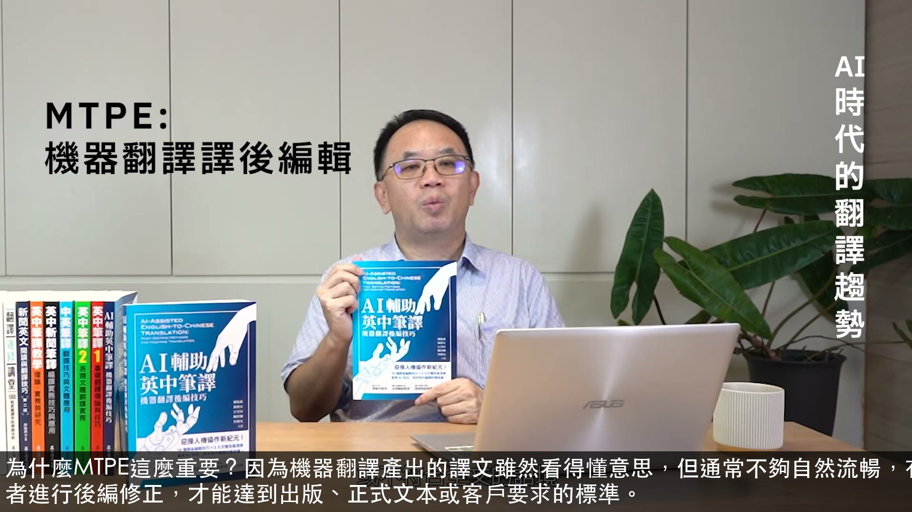
為什麼MTPE這麼重要？因為機器翻譯產出的譯文雖然看得懂意思，但通常不夠自然流暢，有時候也會出錯，或不符合全文的語氣，難登大雅之堂。這時候就需要譯者進行後編修正，才能達到出版、正式文本或客戶要求的標準。
00:01:26.040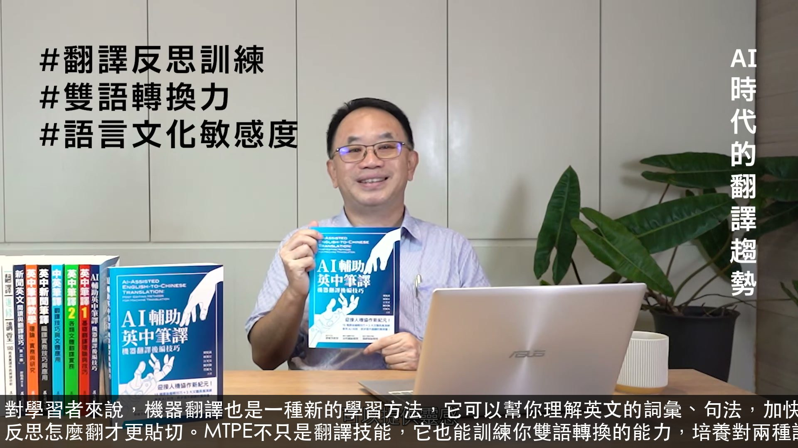
對學習者來說，機器翻譯也是一種新的學習方法，它可以幫你理解英文的詞彙、句法，加快閱讀速度；也可以拿機器翻譯的結果跟自己的譯法來比較，提供靈感，讓你反思怎麼翻才更貼切。MTPE不只是翻譯技能，它也能訓練你雙語轉換的能力，培養對兩種語言和文化的敏感度。
00:01:46.800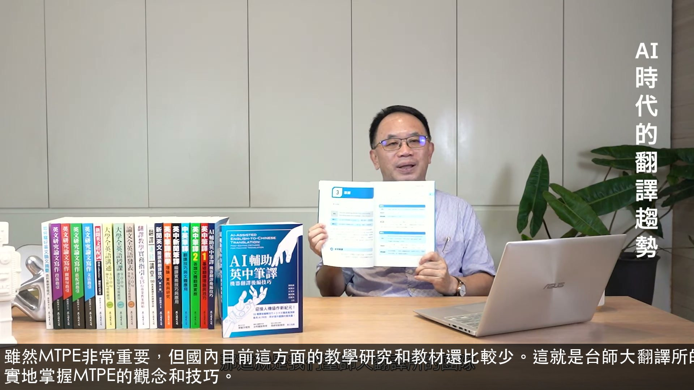
雖然MTPE非常重要，但國內目前這方面的教學研究和教材還比較少。這就是台師大翻譯所的團隊決定寫這本書的初衷：希望提供一本系統性的教材，讓大家能夠扎實地掌握MTPE的觀念和技巧。
00:02:11.800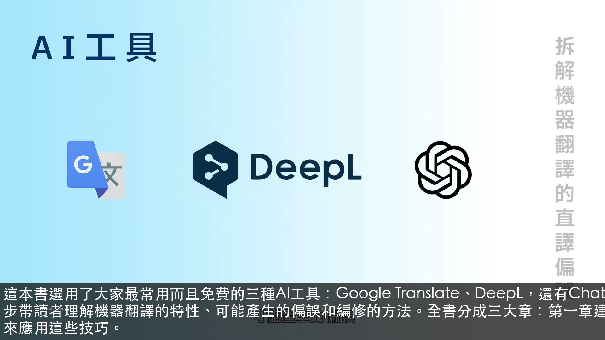
這本書選用了大家最常用而且免費的三種AI工具：Google Translate、DeepL，還有ChatGPT。我們用大量的真實文本來示範，一步一步帶讀者理解機器翻譯的特性、可能產生的偏誤和編修的方法。全書分成三大章：第一章建立機器翻譯的基本概念，第二章說明後編的各種技巧，第三章針對不同文體來應用這些技巧。
00:02:33.840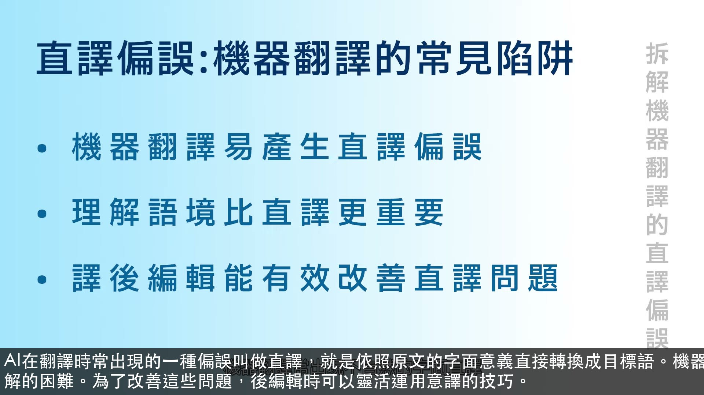
AI在翻譯時常出現的一種偏誤叫做直譯，就是依照原文的字面意義直接轉換成目標語。機器翻譯常出現不自然的字面直譯，導致譯文脫離上下文的脈絡，增加讀者理解的困難。為了改善這些問題，後編輯時可以靈活運用意譯的技巧。
00:03:03.600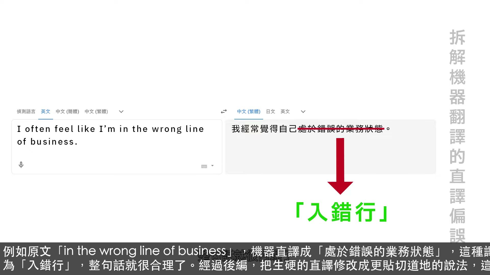
例如原文「in the wrong line of business」，機器直譯成「處於錯誤的業務狀態」，這種譯法並不容易理解。其實可以用意譯調整為「入錯行」，整句話就很合理了。經過後編，把生硬的直譯修改成更貼切道地的說法，這就是後編的價值所在。
00:03:31.360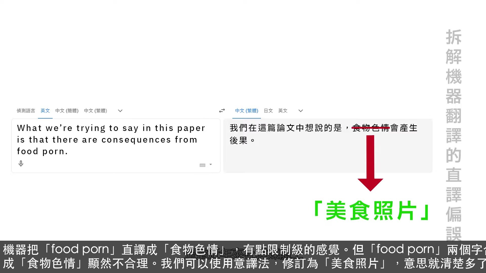
機器把「food porn」直譯成「食物色情」，有點限制級的感覺。但「food porn」兩個字合併，是指近年來社群媒體上擺盤精美的美食照，機器譯成「食物色情」顯然不合理。我們可以使用意譯法，修訂為「美食照片」，意思就清楚多了。
00:03:59.240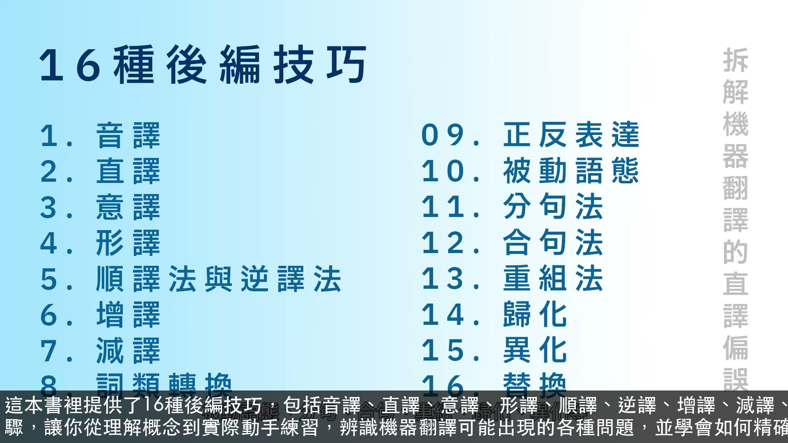
這本書裡提供了16種後編技巧，包括音譯、直譯、意譯、形譯、順譯、逆譯、增譯、減譯、詞類轉換、正反表達、被動語態、分句、合句、重組等。透過三個教學步驟，讓你從理解概念到實際動手練習，辨識機器翻譯可能出現的各種問題，並學會如何精確修正機器的譯文。
00:04:19.680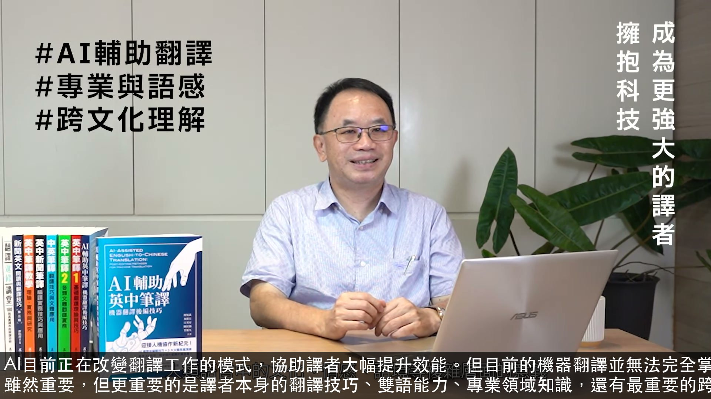
AI目前正在改變翻譯工作的模式，協助譯者大幅提升效能。但目前的機器翻譯並無法完全掌握人類語言中的文化、情感、語境等複雜切面的意義。因此AI翻譯工具雖然重要，但更重要的是譯者本身的翻譯技巧、雙語能力、專業領域知識，還有最重要的跨文化理解能力。
00:04:55.160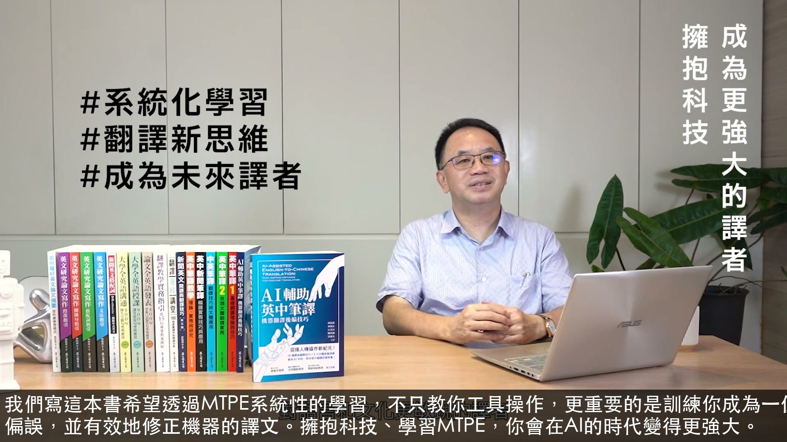
我們寫這本書希望透過MTPE系統性的學習，不只教你工具操作，更重要的是訓練你成為一位思考邏輯縝密、對語言和文化更敏銳的譯者，讓你能夠判斷機器翻譯的偏誤，並有效地修正機器的譯文。擁抱科技、學習MTPE，你會在AI的時代變得更強大。
00:05:19.400